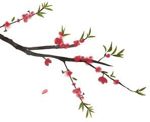
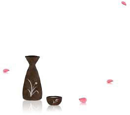

少年时代读到苏轼的一阕词，非常喜欢，到现在还能背诵：
细雨斜风作小寒，
淡烟疏柳媚晴滩，
入淮清洛渐漫漫。
雪沫乳花浮午盏，
蓼茸蒿笋试春盘，
人间有味是清欢。
这阕词，苏轼在旁边写着“元丰七年十二月二十四日，从泗州刘倩叔游南山”，原来是苏轼和朋友到郊外去玩，在南山里喝了浮着雪沫乳花的小酒，配着春日山野里的蓼菜、茼蒿、新笋，以及野草的嫩芽等等，然后自己赞叹着：“人间有味是清欢！”
当时之所以能深记这阕词，最主要的是爱极了后面这一句，因为试吃野菜的这种平凡的清欢，才使人间更有滋味。“清欢”是什么呢？“清欢”几乎是难以翻译的，可以说是“清淡的欢愉”，这种清淡的欢愉不是来自别处，正是来自对平静的、疏淡的、简朴的生活的一种热爱。当一个人可以品味山野菜的清香胜过了山珍海味，或者一个人在路边的石头里看出了比钻石更引人的滋味，或者一个人听林间鸟鸣的声音感受到比提笼遛鸟更感动，或者甚至于体会了静静品一壶乌龙茶比起在喧闹的晚宴中更能清洗心灵……这些就是“清欢”。
“清欢”之所以好，是因为它对生活的无求，是它不讲求物质的条件，只讲究心灵的品味。“清欢”的境界是很高的，它不同于李白的“人生在世不称意，明朝散发弄扁舟”那样的自我放逐；或者“人生得意须尽欢，莫使金樽空对月”那种尽情的欢乐。它也不同于杜甫的“人生有情泪沾臆，江水江花岂终极”这样悲痛的心事，或者“人生不相见，动如参与商；今夕复何夕，共此灯烛光”那种无奈的感叹。
我们活在这个世界上，有千百种人生。文天祥的是“人生自古谁无死，留取丹心照汗青”，我们很容易体会到他的壮怀激烈。欧阳修的是“人生自是有情痴，此恨不关风与月”，我们很能体会到他的绵绵情恨。纳兰性德是“人到情多情转薄，而今真个不多情”，我们也不难会意到他无奈的哀伤。甚至于像王国维的“人生只似风前絮，欢也零星，悲也零星，都作连江点点萍”那种对人生无常所发出的刻骨的感触，我们也依然能够知悉。
清淡的欢愉不是来自别处
正是来自对平静的疏淡的
简朴的生活的一种热爱
可是“清欢”就难了！
尤其是生活在现代的人，差不多是没有清欢的。
你说什么样是清欢呢？我们想在路边好好地散个步，可是人声车声不断地呼吼而过，一天里，几乎没有纯然安静的一刻。
我们到馆子里，想要吃一些清淡的小菜，几乎是杳不可得，过多的油、过多的酱、过多的盐和味精已经成为中国菜最大的特色，有时害怕了那样的油腻，特别嘱咐厨子白煮一个菜，菜端出来时却让人吓一跳，因为菜上挤的沙拉酱比菜还多。
我们有时没有什么事，心情上只适合和朋友啜一盅茶、饮一杯咖啡，可惜的是，心情也有了，朋友也有了，就是找不到地方，有茶有咖啡的地方总是嘈杂的，而且难以找到能一边饮茶一边观景的处所。
俗世里没有清欢了，那么到山里去吧，到海边去吧！但是，山边和海湄也不纯净了，凡是人的足迹可以到的地方，就有了垃圾，就有了臭秽，就有了吵闹！
有几个地方我以前经常去的，像阳明山的白云山庄，叫一壶兰花茶，俯望着台北盆地里堆叠着的高楼与人欲，自己饮着茶，可以品到茶中有清欢。像在北投和阳明山间的山路边有一个小湖，湖畔有小贩卖工夫茶，小小的茶几，藤制的躺椅，独自开车去，走过石板的小路，叫一壶茶，在躺椅上静静地靠着，有时湖中的荷花开了，真是惊艳一山的沉默。有一次和朋友去，两人在躺椅上静静喝茶，一下午竟说不到几句话，那时我想，这大概就是“人间有味是清欢”了。
现在这两个地方也不能去了，去了也只有伤心。湖里的不是荷花了，是漂荡着的汽水罐子，池畔也无法静静躺着了，因为人比草多，石板也被踏损了。到假日的时候，走路都很难不和别人推挤，更别说坐下来喝口茶，如果运气更坏，会遇到呼啸而过的飞车党，还有带伴唱机来跳舞的青年，那时所有的感官全部电路走火，不要说清欢，连欢也不剩了。
要找清欢就一日比一日更困难了。
我当学生的时候，有一位朋友住在中和圆通寺的山下，我常常坐着颠踬的公车去找他，两个人便沿着上山的石阶，漫无速度地，走走、坐坐、停停、看看。那时圆通寺山道石阶的两旁，杂乱地长着朱槿花。我们一路走，顺手拈下一朵熟透的朱槿花，吸着花朵底部的花露，其甜如蜜，而清香胜蜜，轻轻地含着一朵花的滋味，心里遂有一种只有春天才会有的欢愉。
圆通寺是一座全由坚固的石头砌成的寺院，那些黑而坚强的石头坐在山里仿佛一座不朽的城堡。绿树掩映，清风徐徐，我们站在用石板铺成的前院里，看着正在生长的小市镇，那时的寺院是澄明而安静的，让人感觉走了那样高的山路，能在那平台上看着远方，就是人生里的清欢了。
后来，朋友嫁人，到国外去了，我去了一趟圆通寺。山道已经开辟出来，车子可以环山而上，小山路已经很少人走。就在寺院的门口摆着满满的摊贩，有一摊是儿童乘坐的机器马，叽里咕噜的童歌震撼半山，有两摊是打香肠的摊子，烤烘香肠的白烟正往那古寺的大佛飘去。有一位母亲因为不准她的孩子吃香肠而揍打着两个孩子，激烈的哭声尖吭而急促……我连圆通寺的寺门都没有进去，就沉默地转身离开了。山还是原来的山，寺还是原来的寺，为什么感觉完全不同了，失去了什么吗？失去的正是清欢。
下山的心情是不堪的，想到星散的朋友，心情也不是悲伤，只是惆怅，浮起的是一阕词和一首诗，词是李煜的：“高楼谁与上？长记秋晴望。往事已成空，还如一梦中！”诗是李觏的：“人言落日是天涯，望极天涯不见家。已恨碧山相阻隔，碧山还被暮云遮。”那时正是黄昏，在都市烟尘蒙蔽了的落日中，真的看到了一种悲剧似的橙色。
我二十岁的时候，心情很坏的时候，就跑到青年公园对面的骑马场去骑马，那些马虽然因驯服而动作缓慢，却都年轻高大，有着光滑的毛色。双腿用力一夹，它也会如箭一般呼噜着向前蹿去，急忙的风声就从两耳掠过。我最记得的是马跑的时候，迅速移动着的草的青色，青茸茸的，仿佛饱含生命的汁液。跑了几圈下来，一切恶的心情也就在风中、在绿草里、在马的呼啸中消散了。
尤其是冬日的早晨，勒着缰绳，马就立在当地，踢踏着长腿，鼻孔中冒着一缕缕的白气，那些气可以久久不散，当马的气息在空气中消弭的时候，人也好像得到了某些舒放了。
骑完马，到青年公园去散步，走到成行的树荫下，冷而强悍的空气在林间流荡着，可以放纵地、深深地呼吸，品味着空气里所含的元素，那元素不是别的，正是清欢。
最近有一天，突然想到了骑马，已经有十几年没骑了。到青年公园的骑马场时差一点没有吓昏，原来偌大的马场里已经没有一根草了，一根草也没有的马场大概只有台湾才有，马跑起来的时候，灰尘滚滚，弥漫在空气里的尽是令人窒息的黄土，蒙蔽人的眼睛。马也老了，毛色斑驳而失去光泽。
最可怕的是，不知道什么时候在马场搭了一个塑胶棚子，铺了水泥地，其丑无比，里面则摆满了机器的小马，让人骑用，其吵无比。为什么为了些微的小利，而牺牲了这个马场呢？
马会老是我知道的事，人会转变是我知道的事，而在有真马的地方放机器马，在马跑的地方没有一株草则是我不能理解的事。
就在马场对面的青年公园，那里已经不能说是公园了，人比西门町还拥挤吵闹，空气比咖啡馆还坏，树也萎了，草也黄了，阳光也照不灿烂了。我从公园穿越过去，想到少年时代的这个公园，心痛如绞，别说清欢了，简直像极了佛经所说的“五浊恶世”！
生在这个年代，为何“清欢”如此难觅。眼要清欢，找不到青山绿水；耳要清欢，找不到宁静和谐；鼻要清欢，找不到干净空气；舌要清欢，找不到蓼茸蒿笋；身要清欢，找不到清凉净土；意要清欢，找不到智慧明心。如果你要享受清欢，唯一的方法是守在自己小小的天地，洗涤自己的心灵，因为在我们拥有越多的物质世界，我们的清淡的欢愉就日渐失去了。
现代人的欢乐，是到油烟爆起、卫生堪虑的啤酒屋去吃炒蟋蟀；是到黑天暗地、不见天日的卡拉OK去乱唱一气；是到乡村野店、胡乱搭成的土鸡山庄去豪饮一番；以及在狭小的房间里做方城之戏，永远重复着摸牌的动作……以为这些污浊的放逸的生活是欢乐，想起来毋宁是可悲的事。为什么现代人不能过清欢的生活，反而以浊为欢、以清为苦呢？
当一个人以浊为欢的时候，就很难体会到生命清明的滋味，而在欢乐已尽、浊心再起的时候，人间就越来越无味了。
这使我想起东坡的另一首诗来：
梨花淡白柳深青，
柳絮飞时花满城；
惆怅东栏一株雪，
人生看得几清明！
苏轼凭着东栏看着栏杆外的梨花，满城都飞着柳絮时，梨花也开了遍地，东栏的那株梨花却从深青的柳树间伸了出来，仿佛雪一样清丽，有一种惆怅之美，但是，人生，看这么清明可喜的梨花能有几回呢？这正是千古风流人物的性情，这正是清朝画家盛大士在《溪山卧游录》中说的：“凡人多熟一分世故，即多一分机智。多一分机智，即少却一分高雅。”“‘山中何所有？岭上多白云，只可自怡悦，不堪持赠君。’自是第一流人物。”
第一流人物是什么人物？
第一流人物是在清欢里也能体会人间有味的人物！
第一流人物是在尘世间也能找到清欢的滋味的人物！
安迪台风来访时，我正在朋友的书斋闲谈，狂乱喧嚣的风雨声不时透窗而来，一盏细小的灯花烛火在风中微明微灭，但是屋外的风雨越大，我越感觉得朋友书房的幽静，并且微微透出书的香气。
我常想，在茫茫的大千世界里，每一个人都应该保有一个自己的小千世界，这小千世界是可以思考、神游、欢娱、忧伤甚至忏悔的地方，应该完全不受到干扰，如此，作为独立的人才有意义。因为有了小千世界，当大千世界风雨如晦、鸡鸣不已之际，我们可以用清明的心灵来观照；当举世狂欢、众乐成城之时，我们能够超然地自省；当在外界受到挫折时，回到这个心灵的城堡，我们可以在里面得到安慰；心灵的伤口复原，然后再一次比以前更好地出发。
这个“小千世界”最好的地方无疑是书房，因为大部分人的书房里都收藏了无数伟大的心灵，随时能来和我们会面，我们分享了那些光耀的创造，而我们的秘密还得以独享。我认为每个人居住过的地方都能表现他的性格，尤其是书房，因为书房是一个人最亲密的地点，也是一个人灵魂的写照。
我每天大概总有数小时的时间在书房里，有时读书写作，大部分时间是什么也不做，一个人静静地让想象力飞奔，有时想想一首背诵过的诗，有时回到童年家门前的小河流，有时品味着一位朋友自远地带给我的一瓶好酒，有时透过纱窗望着遥远的点点星光想自己的前生，几乎到了无所不想的地步，那种感应仿佛在梦中一样。
有一次，我坐在书桌前，看到书房的字纸篓已经满了出来，有许多是我写坏了的稿纸，有的是我已经使用过的笔记，全被揉皱丢在字纸篓里，而我已经完全忘记了内容，我要去倒字纸篓的时候灵机一动，把那些我已经舍弃的纸一张张拿起来，铺平放在桌上，然后我便看见了自己一段生活的重现，有的甚至还记载着我心里最深处的一些秘密，让自己看了都要脸红的一些想法。
后来我体会到“敬惜字纸”的好处，丢掉了字纸篓，也改正了从前乱丢字纸的习惯。书房的字纸篓都藏有这么大的玄机，缘着书架而上的世界，可见有多么海阔天空了。
安迪台风来访那一夜，我在朋友家聊天到深夜才回到家里，没想到我的书房里竟进了水，那些还夹着残破树叶的污水足足有半尺高，我书架最下层的书在一夜之间全部泡汤。一看到抢救不及，心里紧紧地冒上来一阵纠结的刺痛，马上想到一位长辈，远在加州的许芥昱教授，他的居处淹水，妻儿全跑出了屋外，他为了抢救地下室的书籍资料，迟迟不出，直到儿子在大门口一再催促，他才从屋里走来，就在这时，他连人带房子及刚抢救的书籍资料一起被冲下山去，尸体被发现在数十英里外的郊野。
在茫茫的大千世界里
每一个人都应该保有一个
自己的小千世界
|
|
许芥昱生前好友甚多，我在美国旅游的时候，听到郑愁予、郑清茂、白先勇、于崇信、金恒炜都谈过他死的情形，大家言下都不免有些怅然。一位名震国际的汉学家，诗书满腹，却为了抢救地下室的书籍资料而客死异域，也确要叫人长叹。但是我后来一想，假如许芥昱逃出了屋外，眼见自己的数十年心血、自己最钟爱的书房被洪水冲走，那么他的心情又是何等的哀伤呢？这样想时也就稍微能够释然了。
我看到书房遭水淹的心情是十分哀伤的，因为在书架的最底层，是我少年时期阅读的一批书。它们虽然随着岁月褪色了，大部分我也阅读得熟烂了，然而它们曾经伴随我度过年少的时光，有许多书一直到今天还深深地影响着我。不管我搬家到哪里，总是带着这批我少年时代的书，不忍丢弃，闲时翻阅也颇能使我追想到过去那段意气风发的日子，对现在的我仍存在着激励自省的作用。
这些被水淹的书中，最早的一本是一九五八年由大众书局出版吕津惠翻译的《少年维特的烦恼》，是我的大姊花五元买的，一个个看下来，如今传在我的手中，我是在初中一年级读这本书的。
随手拾起一些湿淋淋的书，有史怀哲的《非洲手记》、英格玛·柏格曼的《野草毒》、安德烈·纪德的《刚果记行》、阿德勒的《自卑与生活》、叔本华的《爱与生的苦恼》、田纳西·威廉的《青春之鸟》、赫胥黎的《瞬息的烛火》、塞林格的《麦田里的守望者》、梅立克和普希金的小说以及艾斯本的遗稿，总共竟有五百余册的损失。
对一个爱书的人，书的受损就像农人的田地被水淹没一样，那种心情不仅是物质的损失，而是岁月与心情的伤痕。我蹲在书房里看劫后的书，突然想起年少时展读这些书册的情景，书原来也是有情的，我们可以随时在书店里购回同样内容的新书，但读书的心情是永远也买不回来了。
“小千世界”是每个“小小的大千”，种种的记录好像在心里烙下了血的刺青，是风雨也不能磨灭的。但是在风雨里把钟爱的书籍抛弃，我竟也有了黛玉葬花的心情，一朵花和一本书一样，它们有自己的心，只是作为俗人的我们，有时候不能体会罢了。
当塞尚把苹果画成蓝色以后，大家对颜色突然开始有了奇异的视野，更不要说马蒂斯蓝色的向日葵、毕加索鲜红色的人体、夏加尔绿色的脸了。
艺术家们都在追求绝对的真实，其实这种绝对往往不是一种常态。
我是真正见过蓝色苹果的人。有一次去参加朋友的舞会，舞会不免有些水果点心，我发现就在我坐的位子旁边一个摆设得精美的果盘，中间有几只梨山的青苹果，苹果之上一个色纸包扎的蓝灯，一束光正好打在苹果上，那苹果的蓝色正是塞尚画布上的色泽。那种感动竟使我微微地颤抖起来，想到诗人里尔克称赞塞尚的画：“是法国式的雅致与德国式的热情之平衡。”
设若有一个人，他从来没有见过苹果，那一刻，我指着那苹果说：苹果是蓝色的。他必然要相信不疑。
然后，灯光变了，是一支快速度的舞，七彩的光在屋内旋转，打在果盘上，所有的水果顿时成为七彩的斑点流动。我抬头，看到舞会男女，每个人脸上的肤色隐去，都是霓虹灯一样，只是一些活动的碎点，像极了秀拉用细点的描绘。当刻，我不仅理解了马蒂斯、毕加索、夏加尔种种，甚至看见了除去阳光以外的真实。
在阳光下，所有的事物自有它的颜色，当阳光隐去，在黑暗里，事物全失去了颜色。设若我们换了灯，同样是灯，灯泡与日光灯会使色泽不同，即使同是灯泡，百烛与十烛间相去甚巨，不要说是一支蜡烛了。我们时常说在黑夜的月光与烛光下就有了气氛，那是我们多出一种想象的空间，少去了逼人的现实，即使在阳光艳照的天气，我们突然走进树林，枝叶掩映，点点丝丝，气氛仿佛滤过，就围绕了周边。什么才是气氛呢？因为不真实，才有气有氛，令人迷惑。或者说除去直接无情的真实，留下迂回间接的真实，那就是一般人口里的气氛了。
有一回在乡下，听到一位农夫说到现今社会风气的败德，他说：“都是电灯害的，电灯使人有了夜里的活动，而所有的坏事全是在黑暗里进行的。”想想，人在阳光的照耀下，到底还是保持着本色，黑暗里本色失去，一只苹果可以蓝，可以七彩，人还有什么不可为呢？
这样一想，阳光确实是无情，它让我们无所隐藏，它的无情在于它的无色，也在于它的永恒，又在于它的自然。不管人世有多少沧桑，阳光总不改变它的颜色，所以仿佛也不值得歌颂了。
熟知中国文学的人应该发现，中国诗人词家少有写阳光下的心情，他们写到的阳光尽是日暮（天寒翠袖薄，日暮倚修竹），尽是黄昏（月上柳梢头，人约黄昏后），尽是落日（大漠孤烟直，长河落日圆），尽是夕阳（去年天气旧亭台。夕阳西下几时回），尽是斜阳（斜阳外，寒鸦数点，流水绕孤村），尽是落照（家住苍烟落照间，丝毫尘事不相关）……阳光的无所不在，无地不照，反而只有离去时最后的照影，才能勾起艺术家诗人的灵感，想起来真是奇怪的事。
一朝唐诗、一代宋词，大部分是在月下、灯烛下进行，你说奇怪不奇怪？说起来就是气氛作怪，如果是日正当中，仿佛都与情思、离愁、国仇、家恨无缘，思念故人自然是在月夜空山才有气氛，怀忧边地也只有在清风明月里才能服人，即使饮酒作乐，不在有月的晚上难道是在白天吗？其实天底下最大的痛苦不是在夜里，而是在大太阳下也令人战栗，只是没有气氛，无法描摹罢了。
有阳光的天色，是给人工作的，不是给人艺术的，不是给人联想和忧思的。有阳光的艺术不是诗人词家的，是画家的专利，中国一部艺术史大部分写着阳光，西方的艺术史也是亮灿照耀，到印象派的时候更是光影辉煌，只是现代艺术家似乎不满意这样，他们有意无意地改变光的颜色。抽象自不必说了，写实，也不要俗人都看得见的颜色，而是透过画家的眼睛，他们说这是“超脱”，这是“真实”，这是“爱怎么画就怎么画才是创作”。
我常说艺术家是上帝的错误设计，因为他们要在阳光的永恒下，另外做自己的永恒，以为这样就成为永恒的主宰。艺术背叛了阳光的原色，生活也是如此。我们的黑夜越来越长，我们的屋子越来越密，谁还在乎有没有阳光呢？现在我如果批评塞尚的蓝苹果，一定引来一阵乱棒，就像齐白石若画了蓝色的柿子也会挨骂一样，其实前后才不过是百年的时间。一百年，就让现代人相信没有阳光，日子一样自在，让现代人相信艺术家的真实胜过阳光的真实。
阳光本色的失落是现代人最可悲的一种，许多人不知道在阳光下，稻子可以绿成如何，天可以蓝到什么程度，玫瑰花可以红到透明，那是因为过去在阳光下工作占人类的大部分，现在变成小部分了，即使是在有光的日子，推窗究竟看到的是什么颜色呢？
我常在都市热闹的街路上散步，有时走过长长的一条路，找不到一根小草，有时一年看不到一只蝴蝶。这时我终于知道：我们心里的小草有时候是黑的，而在繁屋的每一面窗中，埋藏了无数苍白没有血色的蝴蝶。
我遇见一位年轻的农夫，在南方一个充满阳光的小镇。
那时是春末了，一期稻作刚刚收成，春日阳光的金线如雨倾盆地泼在温暖的土地上，牵牛花在篱笆上缠绵盛开，苦苓树上鸟雀追逐，竹林里的笋子正纷纷涨破土地。细心地想着植物突破土地，在阳光下成长的声音，真是人间里非常幸福的感觉。
农夫和我坐在稻埕旁边，稻子已经铺平张开在场上。由于阳光的照射，稻埕闪耀着金色的光泽，农夫的皮肤染了一种强悍的铜色。我在农夫家做客，刚刚是我们一起把谷包的稻子倒出来，用犁耙推平的，也不是推平，是推成小小山脉一般，一条棱线接着一条棱线，这样可以让山脉两边的稻谷同时接受阳光的照射，似乎几千年来就是这样晒谷子，因为等到阳光晒过，八爪耙把棱线推进原来的谷底，则稻谷翻身，原来埋在里面的谷子全翻到向阳的一面来——这样晒谷比平面有效而均衡，简直是一种阴阳的哲学了。
农夫用斗笠扇着脸上的汗珠，转过脸来对我说：“你深呼吸看看。”
我深深地吸了一口气，缓缓吐出。
他说：“你吸到什么没有？”
我吸到的是稻子的气味，有一点香。我说。
他开颜地笑了，说：“这不是稻子的气味，是阳光的香味。”
“阳光的香味？”我不解地望着他。
那年轻的农夫领着我走到稻埕中间，伸手抓起一把向阳一面的谷子，叫我用力地嗅，那时稻子成熟的香气整个扑进我的胸腔，然后，他抓起一把向阴的埋在内部的谷子让我嗅，却是没有香味了。这个实验让我深深地吃惊，感觉到阳光的神奇，究竟为什么只有晒到阳光的谷子才有香味呢？年轻的农夫说他也不知道，是偶然在翻稻谷晒太阳时发现的，那时他还是大学生，暑假偶尔帮忙农作，想象着都市里多彩多姿的生活，自从晒谷时发现了阳光的香味，竟使他下决心要留在家乡。我们坐在稻埕边，漫无边际地谈起阳光的香味来，然后我几乎闻到了幼时刚晒干的衣服上的味道，新晒的棉被、新晒的书画，光的香气就那样淡淡地从童年中流泻出来。自从有了烘干机，那种衣香就消失在记忆里，从未想过竟是阳光的关系。
细心地想着植物突破土地
在阳光下成长的声音
真是人间里非常幸福的感觉
农夫自有他的哲学，他说：“你们都市人可不要小看阳光，有阳光的时候，空气的味道都是不同的。就说花香好了，你有没有分辨过阳光下的花与屋里的花，香气不同呢？”
我说：“那夜来香、昙花香又作何解呢？”
他笑得更得意了：“那是一种阴香，没有壮怀的。”
我便那样坐在稻埕边，一再地深呼吸，希望能细细品味阳光的香气，看我那样正经庄重，农夫说：“其实不必深呼吸也可以闻到，只是你的嗅觉在都市里退化了。”
在澎湖访问的时候，我常在路边看渔民晒鱿鱼，发现晒鱿鱼有两种方式：一种是把鱿鱼放在水泥地上，隔一段时间就翻过身来。在没有水泥地的土地，因为怕蒸起的水汽，渔民把鱿鱼像旗子一样，一面面挂在架起的竹竿上——这种景观是在澎湖、兰屿随处可见的，有的台湾沿海也看得见。
有一次，一位渔民请我吃饭，桌子上就有两盘鱿鱼，一盘是新鲜的刚从海里捕到的，一盘是阳光晒干以后，用水泡发，再拿来煮的。渔民告诉我，鱿鱼不同于其他的鱼，其他的鱼当然是新鲜的最好，鱿鱼则非经过阳光烤炙，不会显出它的味道来。我仔细地吃起鱿鱼，发现新鲜的虽脆，却不像晒干的那样有味、有劲。为什么这样，真是没什么道理。难道阳光真有那样大的力量吗？
渔民见我不信，捞起一碗鱼翅汤给我，说：“你看这鱼翅好了，新鲜的鱼翅，卖不到什么价钱的，因为一点也不好吃，只有晒干的鱼翅才珍贵，因为香味百倍。”
为什么鱿鱼、鱼翅经过阳光暴晒以后会特别好吃呢？确是不可思议，其实不必说那么远，就是一只乌鱼子，干的乌鱼子价钱何止是新鲜乌鱼卵的十倍？
后来我在各地旅行的时候，特别留意这个问题。有一次在南投竹山吃东坡肉油焖笋尖，差一点没有吞下盘子。主人说那是今年的阳光特别好，晒出了最好吃的笋干，阳光差的时候，笋干也显不出它的美味，嫩笋虽自有它的鲜美，经过阳光，却完全不同了。
对鱿鱼、鱼翅、乌鱼子、笋干等等，阳光的功能不仅让它干燥、耐于久藏，也仿若穿透它，把气味凝聚起来，使它发散不同的味道。我们走入南货行里所闻到的干货聚集的味道，我们走进中药铺子扑鼻而来的草香、药香，在从前，无一不是经由阳光凝结的。现在有无须阳光的干燥方法，据说味道也不如从前了。一位老中医师向我描述从前“当归”的味道，说如今怎样熬炼也不如昔日，我没有吃过旧日当归，不知其味，但这样说，让我感觉现今的阳光也不像古时有味了。
不久前，我到一个产制茶叶的地方，茶农对我说，好天气采摘的茶叶与阴天采摘的，烘焙出来的茶就是不同。同是一株茶，春茶与冬茶也全然两样，则似乎一天与一天的阳光味觉不同，一季与一季的阳光更天差地别了，而它的先决条件，就是要具备一只敏感的舌头，不管在什么时代，总有一些人具备好的舌头，能辨别阳光的壮烈与阴柔——阳光那时刻像一碟精心调制的小菜，差一些些，在食家的口中已自有高下了。
这样想，使我悲哀，因为盘中的阳光之味在时代的进程中似乎日渐清淡起来。
八月的时候，我在埃及，沿着尼罗河自北向南，从开罗逆流而溯。一直经过路可索、帝王谷、亚斯文诸地。那是埃及最热的天气，晒两天，就能让人换过一层皮肤。
由于埃及阳光可怕的热度，我特别留心到当地人的穿戴，北非各地，夏天的衣着也是一袭长袍长袖的服装，甚至头脸全包裹起来。我问一位埃及人：“为什么太阳这么大，你们不穿短袖的衣服，反而把全身包裹起来呢？”他的回答很妙：“因为太阳实在太大，短袖长袖同样热，长袖反而可以保护皮肤。”
在埃及八天的旅行，我在亚斯文旅店洗浴时，发现皮肤一层一层地凋落，如同干去的黄叶。埃及经验使我真实地感受到阳光的威力，它不只是烧灼着人，甚至是刺痛、鞭打、揉搓着人的肌肤，阳光热烘烘地把我推进一个不可回避的地方，每一秒的照射都能真实地感应。
后来到了希腊，在爱琴海滨，阳光也从埃及那种磅礴波澜里进入一个细致的形式，虽然同样强烈地包围着我们。海风一吹，阳光在四周汹涌，有浪大与浪小的时候，我感觉希腊的阳光像水一样推涌着，好像手指的按摩。
再来是意大利，阳光像极文艺复兴时代米开朗琪罗的雕像，开朗强壮，但给人一种美学的感应，那时阳光是轻拍着人的一双手，让我们面对艺术时真切地清醒着。
到了中欧诸国，阳光简直成为慈和温柔的怀抱，拥抱着我们。我感到相当惊异，因为同是八月盛暑，阳光竟有着种种变化的触觉：或狂野，或壮朗，或温和，或柔腻，变化万千，加以欧洲空气的干燥，更触觉到阳光直接的照射。
那种触觉简直不只是肌肤的，也是心灵的，我想起中国的一个寓言：
有一个瞎子，从来没有见过太阳。有一天他问一个好眼睛的人：“太阳是什么样子呢？”
那人告诉他：“太阳的样子像个铜盘。”
瞎子敲了敲铜盘，记住了铜盘的声音。过了几天，他听见敲钟的声音，以为那就是太阳了。
后来又有一个好眼睛的人告诉他：“太阳是会发光的，就像蜡烛一样。”
瞎子摸摸蜡烛，认出了蜡烛的形式，又过了几天，他摸到一支箫，以为这就是太阳了。
他一直无法搞清太阳是什么样子。
瞎子永远不能看见太阳的样子，自然是可悲的，但幸而瞎子同样能有阳光的触觉。寓言里只有手的触觉，而没有心灵的触觉，失去这种触觉，就是好眼睛的人，也不能真正知道太阳的。
冬天的时候，我坐在阳台上晒太阳，同一个下午的太阳，我们能感觉到每一刻的触觉都不一样，有时温暖得让人想脱去棉衫，有时一片云飘过，又冷得令人战栗。晒太阳的时候，我觉得阳光虽大，它却是活的，是宇宙大心灵的证明，我想只要真正地面对过阳光，人就不会觉得自己是神，是万物之主宰。
只要晒过太阳，也会知道，冬天里的阳光是向着我们，但走远了，夏天则又逼近，不管什么时刻，我们都触及了它的存在。
记得梭罗在华尔腾湖畔，清晨吸到新鲜空气，希望将那空气用瓶子装起，卖给那些迟起的人。我在晒太阳时则想，是不是有一种瓶子可以装满阳光，卖给那些没有晒过太阳的人呢？
每一天出门的时候，我们对阳光有没有触觉呢？如果没有，我们的感官能力正在消失，因为当一个人对阳光竟能无感，如果说他能对花鸟虫鱼、草木山河有观，都是自欺欺人的了。
在赤道，一位小学老师努力地给儿童说明“雪”的形态，但不管他怎么说，儿童也不能明白。
老师说：雪是纯白的东西。
儿童就猜测：雪像盐一样。
老师说：雪是冷的东西。
儿童就猜测：雪像冰淇淋一样。
老师说：雪是粗粗的东西。
儿童就猜测：雪像沙子一样。
老师始终不能告诉孩子雪是什么。最后，他考试的时候，出了“雪”的题目，结果有几个儿童这样回答：“雪是淡黄色，味道又冷又咸的沙。”
这个故事使我们知道，有一些事物的真相，用言语是无法表白的，对于没有看过雪的人，我们很难让他知道雪。像雪这种可看的、有形象的事物都无法明明白白地说清楚，那么，对于无声无色、没有形象、不可捕捉的心念，如何能够清楚地表达呢？
我们要知道雪，只有自己到有雪的国度。
我们要听黄莺的歌声，就要坐到有黄莺的树下。
我们要闻夜来香的清气，只有夜晚走到有花的庭院。
那些写着最热烈优美的情书的，不一定是最爱我们的人；那些陪我们喝酒吃肉搭肩拍胸的，不一定是真朋友；那些嘴里说着仁义道德的，不一定有人格的馨香；那些签了约的字据呀，也有背弃与撕毁的时候！
这个世界最美好的事物，都是语言文字难以形容与表现的。
那么，让我们保持适度的沉默吧！在人群中，静观谛听；在独处的时候，保持灵敏。
就像我们站在雪中，什么也不必说，就知道雪了。
在雪中清醒的孤独，总比在人群中热闹的寂寞与迷惑要好些。
雪，冷面清明，纯净优美，念念不住，在某一个层次上，像极了我们的心。
雪
冷面清明
纯净优美
念念不住
在某一个层次上
像极了我们的心
二十多年前的乡下没有路灯，夜里穿过田野要回到家里，差不多是摸黑的。平常时日，都是借着微明的天光，摸索着回家。
偶尔有星星，就亮了许多，感觉到心里也有星星的光明。
如果是有月亮的时候，心里就整个沉淀下来，丝毫没有了对黑夜的恐惧。在南台湾，尤其是夏夜，月亮的光格外有辉煌的光明，能使整条山路都清清楚楚地延展出来。
乡下的月光是很难形容的，它不像太阳的投影是从外面来，它的光明犹如从草树、从街路、从花叶，乃至从屋檐下、墙垣内部微微地渗出，有时会误以为万事万物的本身有着自在的光明。假如夜深有雾，到处都弥漫着清气，萤火虫成群飞过，仿佛是月光所掉落出来的精灵。
每一种月光下的事物都有了光明，真是好！
更好的是，在月光底下，我们也觉得自己心里有着月亮、有着光明，那光明虽不如阳光温暖，却是清凉的，从头顶的发到脚尖的指甲都能感受到月的清凉。
走一段路，抬起头来，月亮总是跟着我们，照着我们。在童年的岁月里，我们心目中的月亮有一种亲切的生命，就如同有人提灯为我们引路一样。我们在路上，月在路上；我们在山顶，月在山顶；我们在江边，月在江中；我们回到家里，月正好在家屋门前。
直到如今，童年看月的景象，以及月光下的乡村都还历历如绘。但对于月之随人却带着一丝迷思，月亮永远跟随我们，到底是错觉还是真实的呢？可以说它既是错觉，也是真实。由于我们知道月亮只有一个，人人却都认为月亮跟随自己，这是错觉；但当月亮伴随我们时，我们感觉到月亮是唯一的，只为我照耀，这是真实。
长大以后才知道，真正的事实是，每个人心中有一片月，它是独一无二、光明湛然的。当月亮照耀我们时，它反映着月光，感觉天上的月也是心中的月。在这个世界上，每个人心里都有月亮埋藏，只是自己不知罢了。只有极少数的人，在黑暗的时刻，仍然放散月的光明，那是知觉到自己就是月亮的人。
这是为什么禅宗把直指人心称为“指月”，指着天上的月教人看，见了月就应忘指；教化人心里都有月的光明，光明显现时就应舍弃教化。无非是标明了人心之月与天边之月是相应的、包容的，所以才说“千江有水千江月，万里无云万里天”。即使江水千条，条条里都有一轮明月。从前读过许多诵月的诗，有一些颇能说出“心中之月”的境界，例如王阳明的《蔽月山房》：
山近月远觉月小，便道此山大于月。
若人有眼大如天，当见山高月更阔。
确实，如果我们能把心眼放开到天一样大，月不就在其中吗？只是一般人心眼小，看起来山就大于月了。还有一首是宋代理学家邵雍所写《清夜吟》：
月到天心处，风来水面时。
一般清意味，料得少人知。
月到天心，风来水面，都有着清凉明净的意味，只有微细的心情才能体会，一般人是不能知道的。
我们看月，如果只看到天上之月，没有见到心灵之月，则月亮只是极短暂的偶遇，哪里谈得上什么永恒之美呢？
所以回到自己，让自己光明吧！
登山界流传着一个故事，一个又美丽又哀愁的故事。
传说有一位青年登山家，有一次登山的时候，不小心跌落在冰河之中；数十年之后，他的妻子到那一带攀登，偶然在冰河里找到已经被封冻了几十年的丈夫。这位被埋在冰天雪地里的青年，还保持着他年轻时代的容颜，而他的妻子因为在尘世里，已经是两鬓飞霜年华老去了。
我第一次听到这个故事时，整个胸腔都震动起来，它是那么简短、那么有力地说出了人处在时间和空间之中确定是渺小的，有许多机缘巧遇正如同在数十年后相遇在冰河的夫妻。
许多年前，有一部电影叫《失去的地平线》，那里是没有时空的，人们过着无忧无虑的快乐生活。一天，一位青年在登山时迷路了，闯入了失去的地平线，并且在那里爱上一位美丽的少女。少女向往着人间的爱情，青年也急于要带少女回到自己的家乡，两人不顾大家的反对，越过了地平线的谷口，穿过冰雪封冻的大地，历尽千辛万苦才回到人间。不意在青年回头的那一刻，少女已经是满头银发，皱纹满布，风烛残年了。故事便在幽雅的音乐和纯白的雪地中揭开了哀伤的结局。
本来，生活在失去的地平线的这对恋侣，他们的爱情是真诚的，也都有创造将来的勇气，他们为什么不能有圆满的结局呢？问题发生在时空，一个处在流动的时空，一个处在不变的时空，在他们相遇的一刹那，时空拉远，就不免跌进了哀伤的迷雾中。
最近，台北在公演白先勇小说《游园惊梦》改编的舞台剧，我少年时代几次读《游园惊梦》，只认为它是一个普通的爱情故事，年岁稍长，重读这篇小说，竟品出浓浓的无可奈何。经过了数十年的改变，它不只是一个年华逝去的妇人对风华万种的少女时代的回忆，而是对时空流转之后人力所不能为的忧伤。时空在不可抗拒的地方流动，到最后竟使得“一朝春尽红颜老，花落人亡两不知”。
“时间”和“空间”这两道为人生织锦的梭子，它们的穿梭来去竟如此无情。
在希腊神话里，有一座不死不老的神仙们所居住的山，山口有一个大的关卡，把守这道关卡的就是“时间之神”，它把时间的流变挡在山外，使得那些神仙可以永葆青春，可以和山和太阳和月亮一样永恒不朽。
作为凡人的我们，没有神仙一样的运气，每天抬起头来，眼睁睁地看见墙上挂钟嘀嘀嗒嗒走动匆匆的脚步，即使坐在阳台上沉思，也可以看到日升、月落、风过、星沉，从远远的天外流过。有一天，我们偶遇到少年游伴，发现他略有几根白发，而我们的心情也微近中年了。有一天，我们突然发现院子里的紫丁香花开了，可是一趟旅行回来，花瓣却落了满地。有一天，我们看到家前的旧屋被拆了，可是过不了多久，却盖起一栋崭新的大楼。有一天……我们终于察觉，时间的流逝和空间的转移是如此地无情和霸道，完全没有商量的余地。
中国的民间童话里也时常描写这样的情景，有一个人在偶然的机缘下到了天上，或者游了龙宫，十几天以后他回到人间，发现人事全非，手足无措；因为“天上一日，世上一年”，他游玩了十数天，世上已过了十几年，十年的变化有多么大呢？它可以大到你回到故乡，却找不到自家的大门，认不得自己的亲人。贺知章的《回乡偶书》很能表达这种心情：“少小离家老大回，乡音无改鬓毛衰。儿童相见不相识，笑问客从何处来？”数十年的离乡，甚至可以让主客易势呢！
佛家说的“色相是幻，人间无常”实在是参透了时空的真实，让我们看清一朵蓓蕾很快地盛开，而不久它又要凋落了。
《水浒传》的作者施耐庵在该书的自序里有短短的一段话：“每怪人言，某甲于今若干岁。夫若干者，积而有之之谓。今其岁积在何许？可取而数之否？可见已往之吾，悉已变灭。不宁如是，吾书至此句，此句以前已疾变灭，是以可痛也。”（我常对于别人说“某甲现在若干岁”感到奇怪，若干，是积起来而可以保存的意思，而现在他的岁积存在什么地方呢？可以拿出来数吗？可见以往的我已经完全改变消失，不仅是这样，我写到这一句，这一句以前的时间已经很快改变消失，这是最令人心痛的。）正是道出了一个大小说家对时空的哀痛。
古来中国的伟大小说，只要我们留心，它讲的几乎全有一个深刻的时空问题，《红楼梦》的花柳繁华温柔富贵，最后也走到时空的死角；《水浒传》的英雄豪杰重义轻生，最后下场凄凉；《三国演义》的大主题是“天下大势分久必合，合久必分”；《金瓶梅》是色与相的梦幻湮灭；《镜花缘》是水中之月，镜中之花；《聊斋志异》是神鬼怪力，全是虚空；《西厢记》是情感的失散流离；《老残游记》更明显地道出了：“眼看他起高楼，眼看他楼塌了。”
我们的文学作品里几乎无一例外的，说出了人处在时空里的渺小，可惜没有人从这个角度深入探讨，否则一定会发现中国民间思想对时空的递变有很敏感的触觉。西方有一句谚语：“你要永远快乐，只有向痛苦里去找。”正道出了时空和人生的矛盾，我们觉得快乐时，偏不能永远，留恋着不走的，永远是那令人厌烦的东西……这就是在人生边缘上不时捉弄我们的时间和空间。
柏拉图写过一首两行的短诗：
你看着星吗，我的星星？
我愿为天空，得以无数的眼看你。
人可以用多么美的句子、多么美的小说来写人生，可惜我们不能是天空，不能是那永恒的星星，只有看着消逝的星星感伤的份儿。
有许多人回忆过去的快乐，恨不能与旧人重逢，恨不能年华停伫，事实上，却是天涯远隔，是韶光飞逝，即使真有一天与故人相会，心情也像在冰雪封冻的极地，不免被时空的箭射中而哀伤不已吧！日本近代诗人和泉式部有一首有名的短诗：
心里怀念着人，
见了泽上的萤火，
也疑是从自己身体出来的梦游的魂。
“时间”和“空间”
这两道为人生织锦的梭子
它们的穿梭来去
竟如此无情
我喜欢这首诗的意境，尤其“萤火”一喻，我们怀念的人何尝不是夏夜的萤火忽明忽灭，或者在黑暗的空中一转就远去了，连自己梦游的魂也赶不上，真是对时空无情极深的感伤了。
说到时空无边无尽的无情，它到终极会把一切善恶、美丑、雅俗、正邪、优劣都洗涤干净，再有情的人也丝毫无力挽救。那么，我们是不是就因此而失望颓丧、优柔不前呢？是不是就坐等着时空的变化呢？
我觉得大可不必，人的生命虽然渺小短暂，但它像一扇晴窗，是由自己小的心眼里来照见大的世界。
一扇晴窗，在面对时空的流变时飞进来春花，就有春花；飘进来萤火，就有萤火；传进秋声，就来了秋声；侵进冬寒，就有冬寒。闯进来情爱就有情爱，刺进来忧伤就有忧伤，一任什么事物到了我们的晴窗，都能让我们更真切地体验生命的深味。
只是既然是晴窗，就要有进有出，曾拥有的幸福，在失去时窗还是晴的；曾被打击的重伤，也有能力平复；努力维持着窗的晶明，如此任时空的梭子如百鸟之翔在眼前乱飞，也能有一种自在的心情，不致心乱神迷。
有的人种花是为了图利，有的人种花是为了无聊，我们不要成为这样的人，要真爱花才去种花——只有用“爱”去换“时空”才不吃亏，也只有心如晴窗的人才有真正的爱，更只有爱花的人才能种出最美的花。
几天前，我路过一座市场，看到一位老人蹲在街边，他的膝前摆了六条红薯，那红薯铺在面粉袋上，由于是紫红色的，令人感到特别美。
老人用沙哑的声音说：“这红薯又叫山药，在山顶掘的，炖排骨汤很补，煮汤也可清血。”
我小时候常吃红薯，就走过去和老人聊天。原来老人住在坪林的山上，每天到山林间去掘红薯，然后搭客运车到城市的市场叫卖。老人的红薯一斤卖四十元，我说：“很贵呀！”
老人说：“一点也不贵，现在红薯很少了，有时要到很深的山里才找得到。”
我想到从前在物质匮乏的时候，我们也常到山上去掘野生的红薯，以前在乡下，红薯是粗贱的食物，没想到现在竟是城市里的珍品了。
买了一个红薯，足足有五斤半重，老人笑着说：“这红薯长到这样大要三四年时间呢！”老人哪里知道，我买红薯是在买一些已经失去的回忆。
提着红薯回家的路上，看到许多人排队在一个摊子前等候，我好奇走上前去，才知道他们是在排队买番薯糕。
番薯糕是把番薯煮熟了，捣烂成泥，拌一些盐巴，捏成一团，放在锅子上煎成两面金黄，内部松软，是我童年常吃的食物，没想到台北最热闹的市集，竟有人卖，还要排队购买。
我童年的时候家里非常贫困，几乎每天都要吃番薯，母亲怕我们吃腻，把普通的番薯变来变去，有几样番薯食品至今仍然令我印象深刻，一个就是番薯糕，看母亲把一块块热腾腾的、金黄色的番薯糕放在陶盘上端出来，至今仍然使我怀念不已。
另一种是番薯饼，母亲把番薯弄成签，裹上面粉与鸡蛋调成泥，放在油锅中炸，也是炸到通体金黄时捞上来。我们常在午后吃这道点心，孩子们围着大灶等候，一捞上来，边吃边吹气，还常烫了舌头，母亲总是笑骂：“夭鬼！”
还有一种是在消夜时吃的，是把番薯切成丁，煮甜汤，有时放红豆，有时放凤梨，有时放点龙眼干。夏夜时，我们在庭前晒谷场围着听大人说故事，每人手里一碗番薯汤。
那样的时代，想起来虽然辛酸，却有一种难以言说的幸福。我父亲生前谈到那段时间的物质生活，常用一句话形容：“一粒田螺煮九碗公汤！”
真实的智慧是
来自平常的生活
是心海的一种体现
如果能听闻到心海的消息
一切都是道
今天随人排队买一块十元的番薯糕，特别使我感念的是，为了让我们喜欢吃番薯，母亲用了多少苦心。
卖番薯糕的人是一位少妇，说她来自宜兰乡下，先生在台北谋生，为了贴补家用，想出来做点小生意，不知道要卖什么，突然想起小时候常吃的番薯糕，在糕里多调了鸡蛋和奶油，就在市场里卖起来了。她每天只卖两小时，天天供不应求。
我想，来买番薯糕的人当然有好奇的，大部分则基于怀念，吃的时候，整个童年都会从乱哄哄的市场寂静深刻地浮现出来吧！
“番薯糕”的隔壁是一位提着大水桶卖野姜花的老妇，她站的位置刚好使野姜花的香与番薯糕的香交织成一张网，我则陷入那美好的网中，看到童年乡野中野姜花那纯净的秋天！
这使我想起不久前，朋友请我到福华饭店去吃台菜，饭后叫了两个甜点，一个是芋仔饼，一个是炸香蕉，都是我童年常吃的食物。当年吃这些东西是由于芋头或香蕉生产过剩，根本卖不出去，母亲想法子让我们多消耗一些，免得暴殄天物。
没想到这两样食物现在成为五星级大饭店里的招牌甜点，价钱还颇不便宜，吃炸香蕉的人大概不会想到，一盘炸香蕉的价钱在乡下可以买到半车香蕉吧！
时代真是变了，时代的改变，使我们检证出许多事物的珍贵或卑贱、美好或丑陋，只是心的觉受而已，它并没有一个固定的面目，心如果不流转，事物的流转并不会使我们失去生命价值的思考，而心如果浮动，时代一变，价值观就变了。
克勤圆悟禅师去拜见真觉禅师时，真觉禅师正在生大病，膀子上生疮，疮烂了，血水一直流下来。圆悟去见他，他指着膀上流下的脓血说：“此曹溪一滴法乳。”
圆悟大疑，因为在他的心中认定，得道的人应该是平安无事、欢喜自在，为什么这个师父不但没有平安，反而指说脓血是祖师的法乳呢？于是说：“师父，佛法是这样的吗？”真觉一句话也不说，圆悟只好离开。
后来，圆悟参访了许多当代的大修行者，虽然每个师父都说他是大根利器，他自己知道并没有开悟。最后拜在五祖法演的门下，把平生所学的都拿来请教五祖，五祖都不给他印可，他愤愤不平，背弃了五祖。
他要走的时候，五祖对他说：“等你着一顿热病打时，方思量我在！”
满怀不平的圆悟到了金山，染上伤寒大病，把生平所学的东西全拿出来抵抗病痛，没有一样有用的，因此在病榻上感慨地发誓：“我的病如果稍微好了，一定立刻回到五祖门下！”这时的圆悟才算真实地知道为什么真觉禅师把脓血说成是法乳了。
圆悟后来在五祖座下，有一次听到一位居士来向师父问道，五祖对他说：“唐人有两句小艳诗与道相近：频呼小玉原无事，只要檀郎认得声。”居士有悟，五祖便说：“这里面还要仔细参。”
圆悟后来问师父说：“那居士就这样悟了吗？”
五祖说：“他只认得声而已！”
圆悟说：“既然说只要檀郎认得声，他已经认得声了，为什么还不是呢？”
五祖大声地说：“如何是祖师西来意？庭前柏树子！去！”
圆悟心中有所省悟，突然走出，看见一只鸡飞上栏杆，鼓翅而鸣，他自问道：“这岂不是声吗？”
于是大悟，写了一首偈：
金鸭香销锦绣帏，笙歌丛里醉扶归；
少年一段风流事，只许佳人独自知。
我很喜欢这个故事，特别是真觉对圆悟说自己的脓血就是曹溪的法乳，还有后来“见鸡飞上栏杆，鼓翅而鸣”的悟道。那是告诉我们，真实的智慧是来自平常的生活，是心海的一种体现，如果能听闻到心海的消息，一切都是道。番薯糕，或者炸香蕉，在童年穷困的生活与五星级大饭店的台面上，都是值得深思的。
圆悟曾说过一段话，我每次读了，都感到自己是多么庄严而雄浑，他说：
山头鼓浪，井底扬尘；
眼听似震雷霆，耳观如张锦绣。
三百六十骨节，一一现无边妙身；
八万四千毛端，头头彰宝王刹海。
不是神通妙用，亦非法尔如然；
苟能千眼顿开，直是十方坐断。
心海辽阔广大，来自心海的消息是没有五官，甚至是无形无相，用眼睛来听，以耳朵观照，在每一个骨节、每一个毛孔中都有庄严的宝殿呀！
夜里，我把紫红色的红薯煮来吃，红薯煮熟的质感很像汤圆，又软又糯，想起很久很久以前在晒谷子的庭院吃红薯汤，突然看见一只鸡飞上栏杆，鼓翅而鸣。
呀！这世界犹如少女呼叫情郎的声音那样温柔甜蜜，来自心海的消息看这现成的一切，无不显得那样珍贵、纯净而庄严！
开车走麦帅二桥，要下桥的时候，突然看到西边天最远的地方，有一轮紫红色饱满而圆润的夕阳。
那夕阳美到出乎我的意料，紫红中有一种温柔震慑了我的心，饱满而圆润则有一种张力，温暖了我连日来被误解的灰暗。
我突然感到舍不得，舍不得夕阳沉落。
我没有如平时一样，下桥的第三个红绿灯左转，而是直直地向西边的太阳开去。
我一边踩着油门，一边在心里赞美这城市里少见的秋日的夕阳之美，同时也为夕阳沉落的速度感到可惊。
仿如拿着滚轮滚下最陡的斜坡，连轮轴都没看清，滚轮已落在山脚。夕阳亦是如此，刚刚在桥上时还高挂在大楼顶方的红色圆盘，一坠一坠，迅即落入路的尽头。
就在夕阳落人不见的那一刹那，城市立即蒙上了一片灰色的黯影，我的心也像石头坠入湖心，石已不见，一波一波的涟漪却泛了起来。
我猛然产生了两个可怕的想法：我每天都在同一个时间走同一条路到学校接孩子放学，为什么三个月来都没有看见美丽的夕阳？如果我曾看见夕阳，为什么三个月来完全没有感觉？
这两个想法使我忍不住悲哀。在前面的三个月，我就像一棵树，为了抵挡生命中突来的狂风暴雨，以免树下的几棵小树受伤，每日在风雨中摇来摇去，根本没有时间抬头看看蔚蓝的天空，更不用说一天只是短暂露脸的夕阳了。
我为自己感到悲伤，但更悲伤的是，想到这城市里，即使生命中没有风雨，也很少人能真心欣赏这美丽的夕阳吧！
每到黄昏时开车去接孩子，会打开收音机以排遣塞车的无聊，才渐渐发现，黄昏时刻几乎所有的电台都是论说的节目。抒情的、感性的节目，在下午四点以后就全部沦亡了。
论说的节目几乎无可避免地有一个共同的调子，就是批评，永不停止的批评。
我常常会想：在黄昏的时候，一天的工作已经结束，心情应该处在一种欢喜与柔美的状态，沉浸于优美的音乐。然而却几乎所有的节目都在论说，永不停止地议论，是不是象征着整个城市在黄昏时美好的感觉也都沦亡了呢？
我为自己的今天
盖下一个美丽的落款封印
并疼惜从前那些囿于世俗的
沦于形式的
僵于论说的
在无知与无意间
流逝的时光
想要换个电台、换一种感觉，转来转去却转不出忧伤的心。最后，只好又转回我最喜欢的台北爱乐，一边听着优美的古典音乐，一边想着：如果在黄昏时刻，禁止论说，只准听音乐喝茶，看夕阳沉思，将是对这个城市的人最严重的惩罚吧！
那美丽的紫红夕阳，使我想起水墨画左下角的落款的印章。
如果我们的每一天是一幅画，应该尽心地着墨，尽情地上彩，尽力地美丽动人，在落款钤印的时候，才不会感到遗憾。对一幅画而言，论说是容易的，抒情是困难的；涂鸦是容易的，留白是困难的；签名是容易的，盖章是困难的。
但是，这个城市还有人在画水墨吗？还有人在每天黄昏，用庄严的心情为一幅水墨画落款吗？
看到夕阳完全沉落，我怅然地回转车子，有着橘子黄的光晕还余韵犹存地照在车上，惨白的街灯则已点燃，逐渐在黑幕里明晰。
我为自己的今天盖下一个美丽的落款封印，并疼惜从前那些囿于世俗的、沦于形式的、僵于论说的、在无知与无意间流逝的时光。
岁月当是明证
我们活的时候
真正感觉到自己
是存在的
岁月的脚步一走过
转眼便如云烟无形
|  |  |